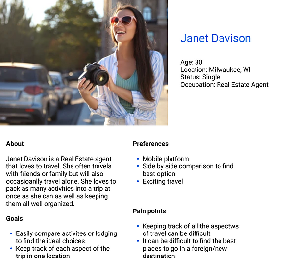
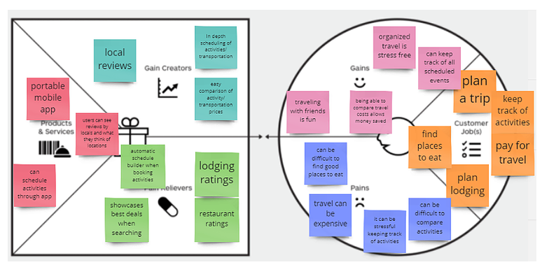
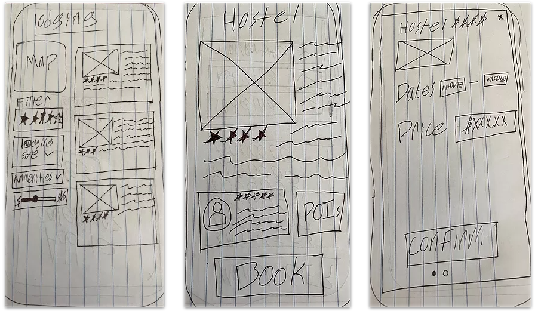
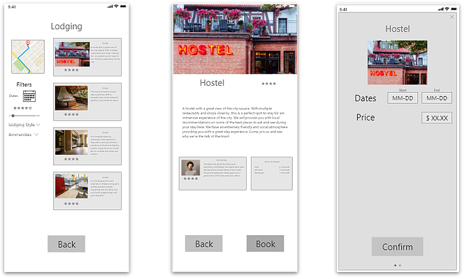

TourGuide is a new way to plan and keep track of plans while going on vacation. With TourGuide users can keep all of their travel plans organized within one place leaving them to enjoy their trips worry free.
Who is the User? In order to direct the design of the project first I needed to understand who the user was.
Understanding the user would allow me to make sure the design is on track to successfully meet their needs.
To kick off the user research, I conducted user interviews. The results from interviews allowed me to identify
the major pain points users had in their recent travel planning processes.
Based on the user interviews, Users often have comfortable planning habits when it comes to a large trip.
However, they feel it is hard to balance multiple planned activities and this often causes stress while traveling.
After interviewing participants, I created a user scenario in order to get into the mindset of the user.
This helped to understand their journey through travel planning and the pain points they encounter.
Once a view through the eyes of the user was established, I was able to prioritize features of the products through a Value Proposition.
This allowed me to truly narrow down what was beneficial to the user.
To start the design process, wireframes were drawn in order to get an idea of what direction to take
with the information gathered from the feature prioritization.
Based on the wireframe sketches, some Low-Fidelity wireframes were created and used to do some initial user testing.
Based on the LoFi wireframes, Mid fidelity wireframes were created for user testing. Users were given a series of tasks to complete.
Based on the results of the testing the wireframes were itereated upon. This gave us the final version of TourGuide.
Throughout the design process I developed many vital skills. I learned the importance of stepping back and taking
a look at your design and that it's okay to scrap the whole design if necessary. Starting over is not necessarily a bad thing.
In this context it allowed me to create a much better experience and something that I was proud of.